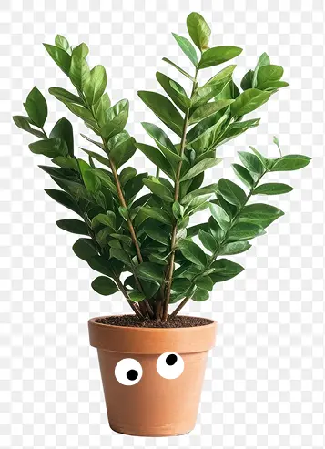

How not to kill plants (or make them want to kill themselves....)
ZZ-planten (aka Zamioculcas zamiifolia eller smaragdpalme) er en af de mest tilgivende stueplanter – perfekt til dig, planteseriemorderen.
Dette er din guide til at passe Anders Dusk Pedersen
Det vigtigste at vide:
Anders er en dry bitch - han vil hellere tørste end at drukne. Derfor vand ikke for meget!!!!!
Placering:
Loves to see the light, men kan også stå mere i skyggen.
Bedste valg: Indirekte lys (altså ikke lige ved et vindue med fuld sol) - kan IKKE tåle direkte sol i mange timer - han bliver solbrændt (faktor 50 virker ikke- ryk ham lidt væk fra vinduet i stedet)
Vanding (vigtigste punkt!):
Vand hver 2.-4. uge – han godt lide at blive ignoreret (et turn on??) så hellere for lodt end for meget
Tjek jorden først: Time to finger! Stik en finger ned i jorden– føles den stadig fugtig? Så vent med at vande
Hvis du er i tvivl – lad være med at vande.
ZZ-planter kan rådne, hvis de står i våd jord for længe. Råd = død xD
Gødning (valgfrit):
kan få lidt flydende gødning 2-3 gange om året i foråret/sommeren if u fancy
Drop det helt, hvis du glemmer det – han dør ikke af det
Omplantning:
Kun hvis rødderne vokser ud af bunden. Det sker typisk kun hvert 2.-3. år.
Brug almindelig pottemuld med dræn i bunden - spørg asta
Symptomer og løsninger:
Gule blade: For meget vand. Vent længere mellem vanding
Slatne, bløde stængler: Råd i rødderne. Klip rådne dele af, plant om
Krøllede blade, brune spidser: For lidt vand/lufttørke. Vand lidt mere, flyt væk fra radiator

Pls sir, don’t kill me
(vand mig med dine tårer)